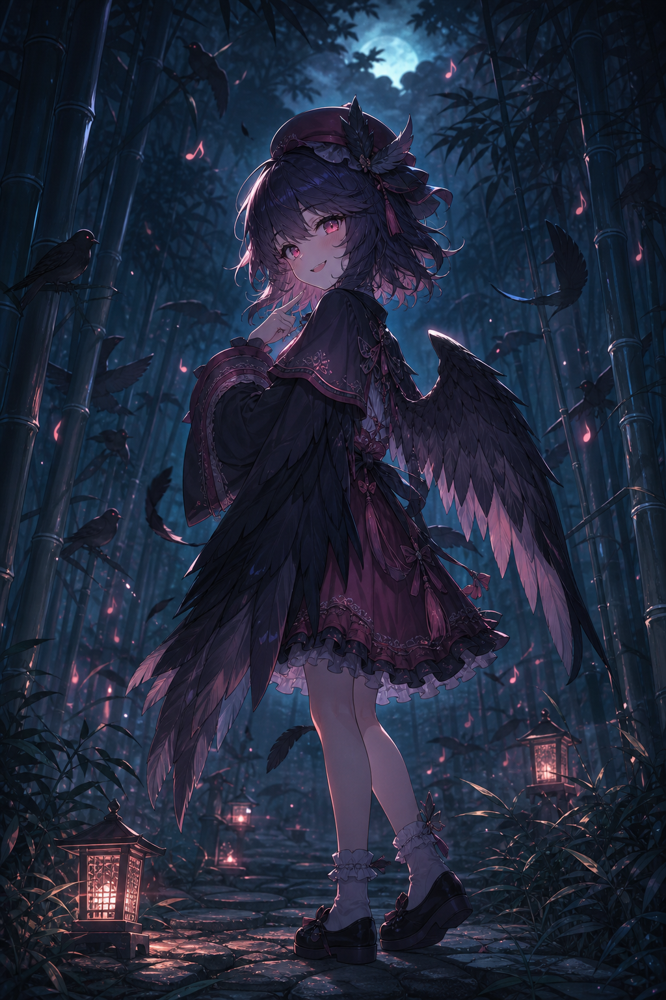
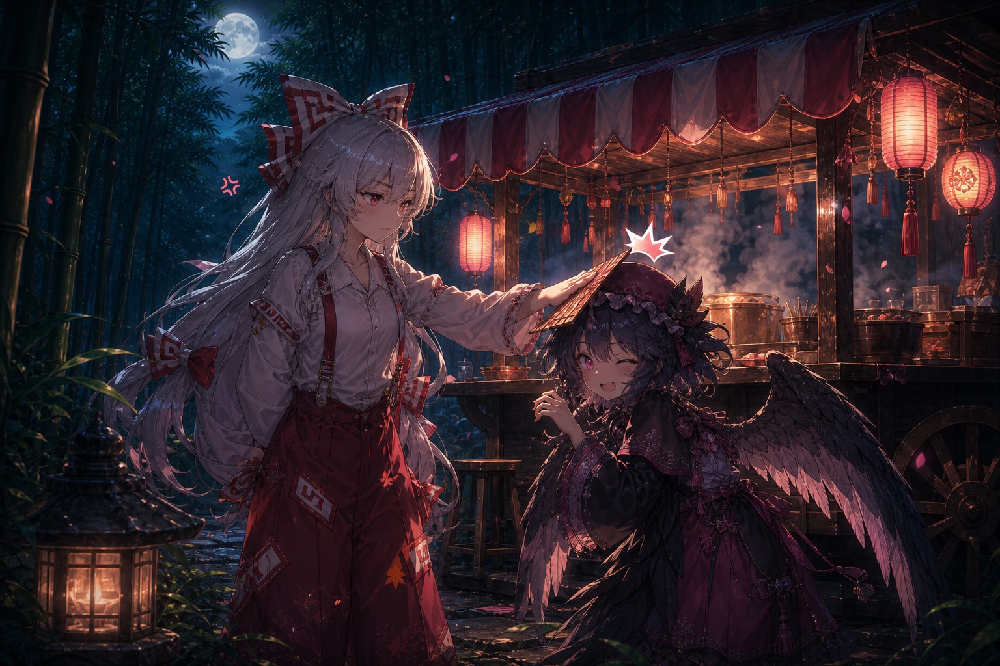

night sparrow tale
죽림을 지나가다
작은 참새를
발견했다.
처음에는 정말 평범한 새 한 마리처럼 보였다.
풀잎은 햇빛을 머금고 있었고,
나는 가벼운 호기심으로 그 뒤를 따라갔다.
참새는 날 부르듯
죽림 안쪽으로 날아갔다.
날개가 한 번 흔들릴 때마다 숲 안쪽의 빛도 함께 흔들렸다.
아주 작고 맑은 울음소리가, 따라오라고 속삭이는 것 같았다.
참새는 점점 더
깊은 곳으로
나를 데려갔다.
길은 모두 비슷하게 휘어 있었고, 낮의 색은 조금씩 빠져나갔다.
돌아가려 할 때마다 같은 대나무가 다시 앞을 막았다.
어디 갔지?
방금 전까지 보이던 작은 날개가 대나무 사이로 사라졌다.
하얀 깃털 하나만 남긴 채, 숲은 아무 대답도 하지 않았다.
어라?
여기 아까 지나온 길 같은데.
같은 잎사귀, 같은 그림자, 같은 방향으로 휘어진 대나무.
숲은 조금씩 길의 얼굴을 지우고 있었다.
시야가 점점
좁아지는 것 같다.
가까운 것만 겨우 보이고, 먼 곳은 검은 물감처럼 번져 갔다.
길도, 하늘도, 내가 왔던 방향도 천천히 시야에서 사라졌다.
그러고 보니
이 노랫소리는 뭐지?
분명 멀리서 들리는 노래일텐데, 귓가 바로 옆에서 속삭이는 것처럼 선명했다.
멜로디는 낯설었지만 이상하게 익숙하기도 했다.
내가 알아챈 순간
노랫소리가 끊어졌다.
바람도, 잎사귀도, 내 발소리마저 멈춘 것 같았다.
조용해진 숲은 오히려 더 시끄럽게 숨을 죽이고 있었다.
수많은 시선이
나를 쳐다보고 있었다.
인기척에 놀라 돌아보니 아무것도 없었다. 그리고 다시 앞을 볼땐,
이미.. 수많은 시선들이 나를 기분 나쁘게 응시하고 있었다.
집에 가고 싶어.
나는 도대체 어디까지 들어와 버린 걸까. 발소리는 분명 하나뿐인데,
누군가 뒤에서 내 걸음에 맞춰 따라오고 있는것 같았다.
내 노래,
어때?
어둠 속에서 목소리가 웃었다. 나는 발걸음을 멈추고, 숨을 죽인 채,
그저 못 들은척 할 수 밖에 없었다.
도망쳐 봤자
소용없어.
그 목소리는 장난처럼 가벼웠지만, 그래서 더 무서웠다.
이 곳에서 빨리 도망쳐야 한다는 건 알았다. 허나 다리가 말을 듣지 않았다.
그렇게 떨리는 다리로
어디까지 갈 수 있을 것 같아?
가까워지는 목소리, 늘어나는 기묘한 시선들
금방이라도 어둠이 입을 벌려 나를 집어삼킬 것 같았다.
...

와

meanwhile, at the yatai
정신을 차려보니
포장마차 앞이었다.
작게 웃는 그녀의 웃음소리. 때마침 누군가가 다가와 그녀의 머리를 가볍게 콩
미안하다는듯, 내게 꼬치 요리를 내밀었다. 처음 먹어보는 요리였지만 정말 맛있었다.
Mystia Lorelei
미스티아 로렐라이
요스즈메 요괴. 노래를 통해 사람을 야맹증으로 만드는 정도의 능력을 가지고 있다.
밤이 되면 포장마차를 열고, 지나가는 이를 겁에 질리게 해 유혹한다.
… 하지만 본인이 놀라면, 「삐약」 하고 울어버린다.